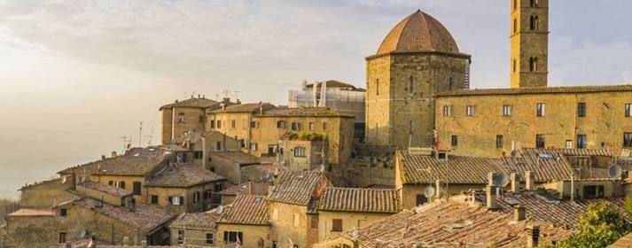
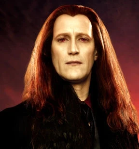
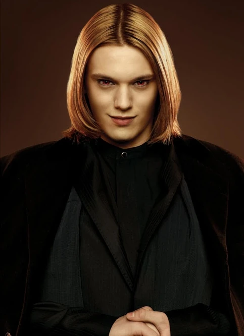
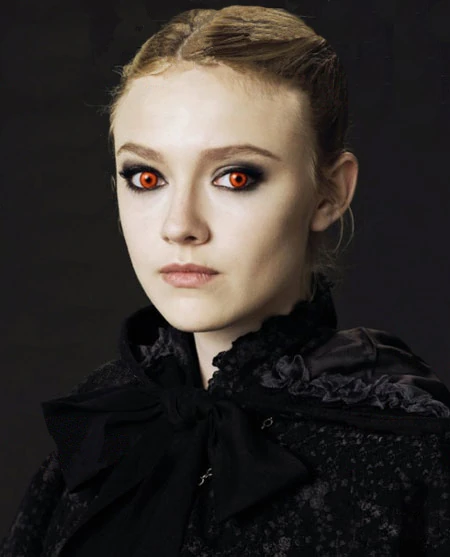
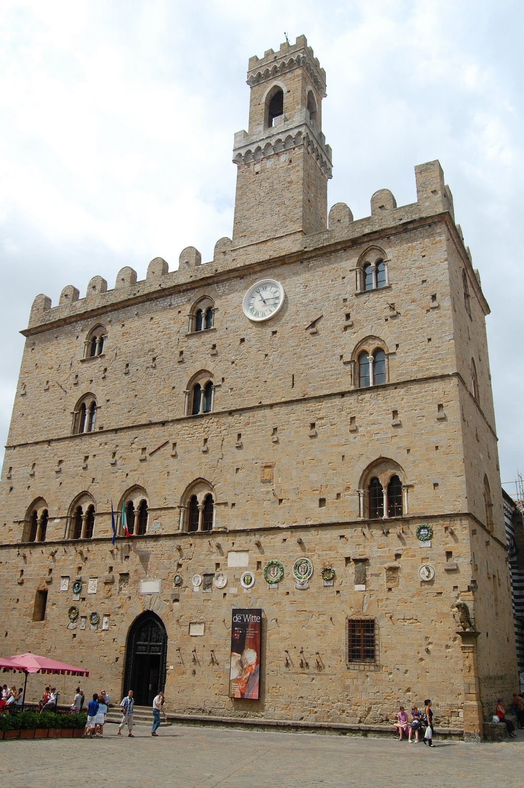

01
Aro
Puede conocer todos los pensamientos que una persona ha tenido con solo tocarla.
TOSCANA · ITALIA
THE VOLTURI
Una ciudad antigua esconde a la familia que gobierna el mundo vampírico desde hace siglos.
Entrar a Volterra01 · THE CITY
Para los humanos, Volterra es una antigua ciudad italiana. Debajo de sus calles, existe un mundo que la mayoría nunca llega a conocer.

02 · THE VOLTURI
Desde Volterra, los Volturi protegen el secreto de su especie y castigan a quienes amenazan con revelarlo.
Puede conocer todos los pensamientos que una persona ha tenido con solo tocarla.

El más severo de los líderes Volturi y el primero en exigir un castigo.

Puede percibir la intensidad de los vínculos entre las personas.

Es capaz de provocar la ilusión de un dolor insoportable.

03 · THE CLOCK
Bella atraviesa la plaza entre una multitud vestida de rojo mientras intenta llegar hasta Edward antes de que sea demasiado tarde.
11 : 59